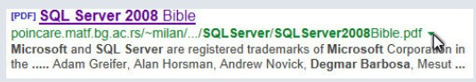

Reconhecimento Técnico Internacional

Capa do Livro

Evidência de participação – SQL Server 2008 Bible
Fui mencionado como colaborador na obra “SQL Server 2008 Bible”, uma das mais reconhecidas publicações técnicas da área, publicada pela editora Wiley.
Meu nome apareceu entre especialistas como Alan Horsman, Adam Greifer e Andrew Novick, conforme demonstrado na captura da pesquisa original do Google.
📘 Esse é um trecho capturado da visualização de uma pesquisa no Google apontando para o PDF do livro SQL Server 2008 Bible.
📘 Hospedado no domínio matf.bg.ac.rs, o que dá ainda mais credibilidade, sendo um domínio educacional da Universidade de Belgrado.
SQL Server • Wiley • 2008